Un recorrido por cada pestaña del panel del maestro, el panel en el celular, los tipos de asignaciones y reactivos, los bancos, el generador de conversaciones con voz, los reportes y el panel de la dirección. Las capturas usan datos de demostración.
01 / Panel del maestro en la computadoraPestañas y herramientas
En la barra superior están las pestañas principales y, a la derecha, el selector de ciclo escolar, los mensajes 💬, las notificaciones 🔔, el cambio de tema y Mi cuenta.
👥 Grupos
Tus clases del ciclo activo, con sus alumnos y su asistencia.
Crear grupos con nombre, color, idioma de la clase y horario, incluso con varias sesiones el mismo día.
Código de invitación para que los alumnos se unan solos, o inscripción desde Cuentas.
Alumnos con indicadores de colores según su asistencia y sus entregas; tú defines los porcentajes de cada color.
Ver detalles de cada alumno: asistencia sesión por sesión y calificaciones.
Nota privada por alumno, que solo ves tú, y mensaje directo.
Asistencia: sesiones por QR o pase de lista, tolerancia en minutos, bloqueo de un dispositivo por alumno y reapertura de sesiones.
Ajustes de la clase: logo para los PDF, graficadora y chat para los alumnos.
Orden de los grupos arrastrándolos.
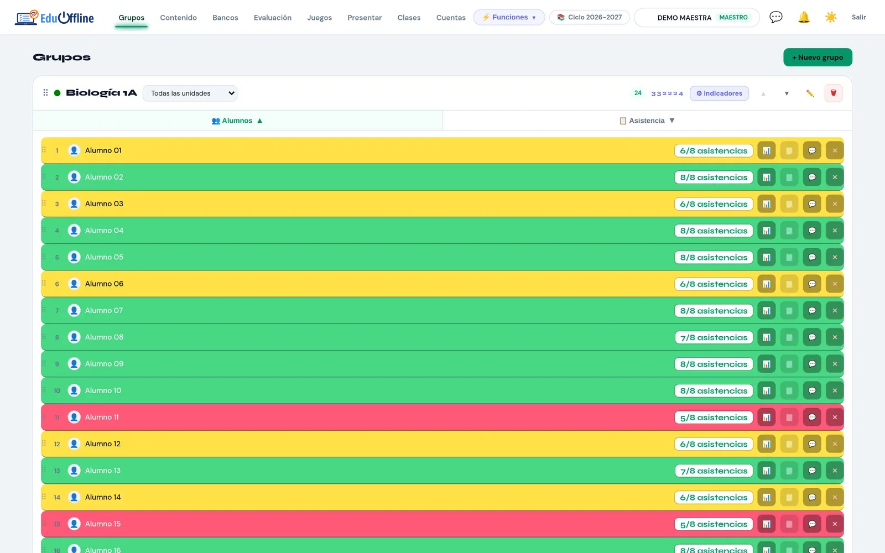
Indicadores por alumno.
📚 Contenido
Las unidades de cada grupo y todas sus actividades.
Menú ⋮ de cada actividad: editar, ver entregas, duplicar, ocultar, programar desde cuándo se ve, asignarla solo a algunos alumnos, generar examen en papel y exportar a Google Forms.
Editor de formularios a pantalla completa, con secciones, vista previa que simula lo que verá el alumno y selección de varios reactivos para moverlos, copiarlos o guardarlos en un banco.
Bancos para el alumno por unidad: definiciones y preguntas de repaso que puedes mostrarle.
Importar y exportar actividades entre grupos.
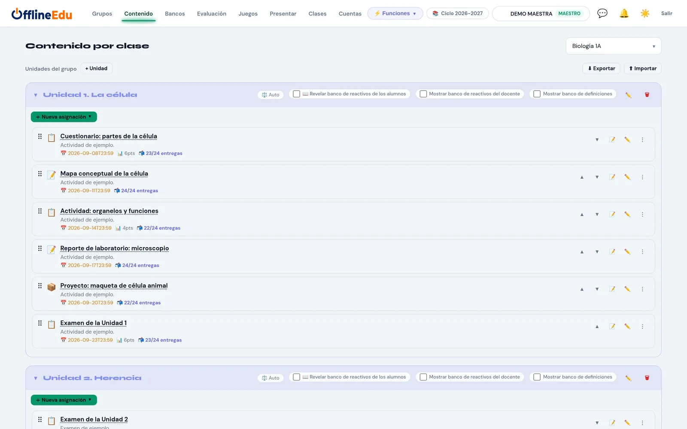
Actividades por unidad.
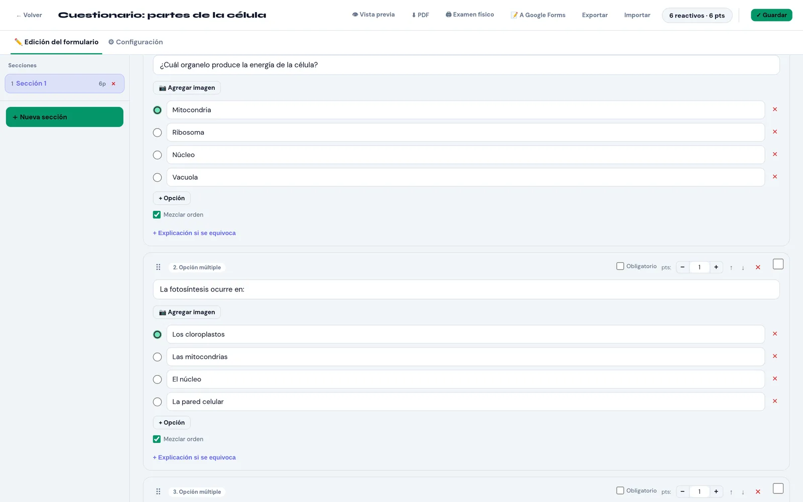
Editor de formularios.
🗂 Bancos
Tu material reutilizable, organizado por materia, unidad y carpetas.
Trece juegos multijugador para repasar en el salón.
EduQuiz, EduCard, EduFlip, EduDuel (duelo de naves), EduFix (encuentra el error), EduRace (carrera de preguntas), EduSort (clasificación relámpago), EduLine (línea de tiempo), EduStop (Stop / Basta), EduRain (lluvia de palabras), EduCatch (atrapa las respuestas), EduBlast (globos de verbos) y EduWord (palabra oculta).
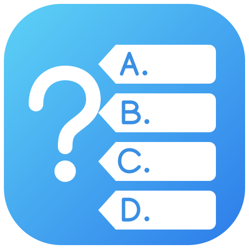
EduQuiz: preguntas en vivo con puntos por acierto, rapidez y rachas; música, cuenta regresiva y resultados suenan solo en la computadora del maestro; podio y estadísticas al final. Preguntas desde tus bancos y diccionarios.
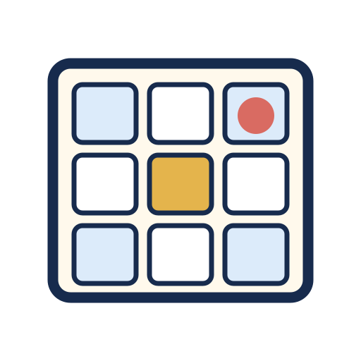
EduCard: cartas con palabras o imágenes; la forma de ganar (línea, esquinas, L, T, cartón lleno o una forma dibujada) se elige en la sala de espera; termina con el primer ganador; el alumno tiene que darse cuenta solo de que ganó. Editor de listas con imágenes.
EduFlip: memoria en tiempo real, cada alumno con su propio tablero y todos a la vez; tiempo configurable con tiempo extra, pausa, clasificación en vivo y reconocimientos sin exhibir errores.
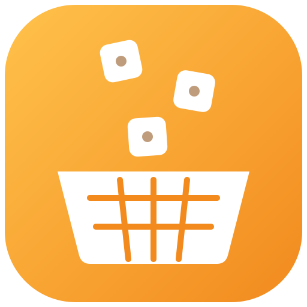
EduCatch: caen formas de verbos y cada alumno atrapa la correcta con su canasta, arrastrándola con el dedo o inclinando el celular (giroscopio, con sensibilidad ajustable). Empieza con una cuenta 3-2-1, y el proyector muestra el tiempo, la velocidad, las vidas y la clasificación en vivo.
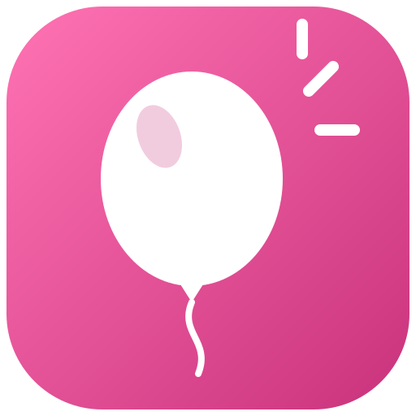
EduBlast con la cámara: el alumno se ve en la pantalla de su celular y revienta los globos con la punta de su dedo índice (realidad aumentada), o tocando la pantalla. El reconocimiento de la mano ocurre en el celular, sin internet, y la imagen no se envía a ningún lado.
Computadora y celular a la vez: inicia el juego en cualquiera de los dos; el otro recibe el aviso "Ir a controlar el juego" y se controla desde ambos. Los sonidos salen en la computadora del salón.
Sala con lobby: los alumnos entran mientras eliges las preguntas.
Eliges la clase en la sala de espera, y solo esa clase ve la sesión del juego.
Puntajes por alumno que pueden contar para la unidad.
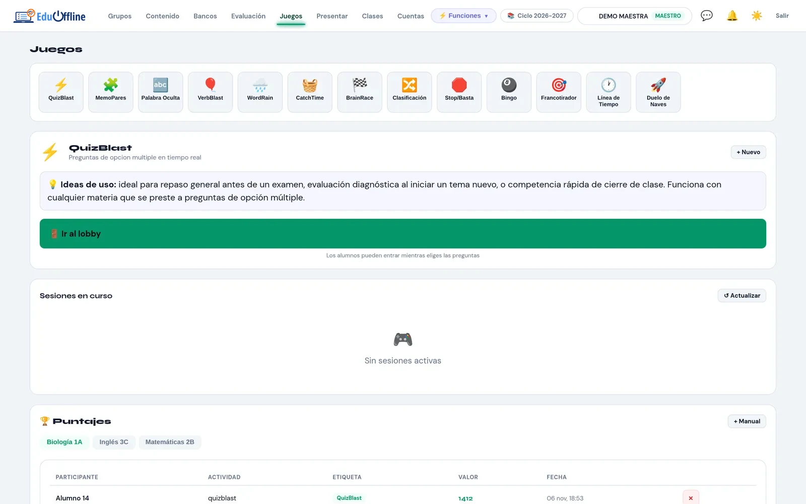
Selección de juegos.
🎬 Presentar
Tus presentaciones con contenido interactivo para cada diapositiva.
Editor por diapositiva: texto, encuesta, verdadero o falso, opción múltiple, imagen, audio, video o enlace.
Control en vivo desde la computadora o el celular: avanzar, bloquear o fijar contenido, navegación libre y alumno al azar.
Modo maestro: solo tú usas los controles, sin llevar a los alumnos a la presentación.
Captura de pantalla para enviar a los alumnos lo que estás mostrando.
Descarga de la presentación para la audiencia, durante o al final.
Retomar en la diapositiva donde te quedaste con ese grupo.
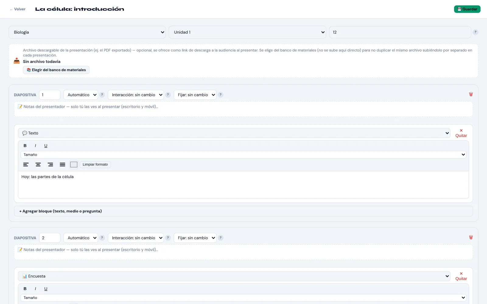
Editor por diapositiva.
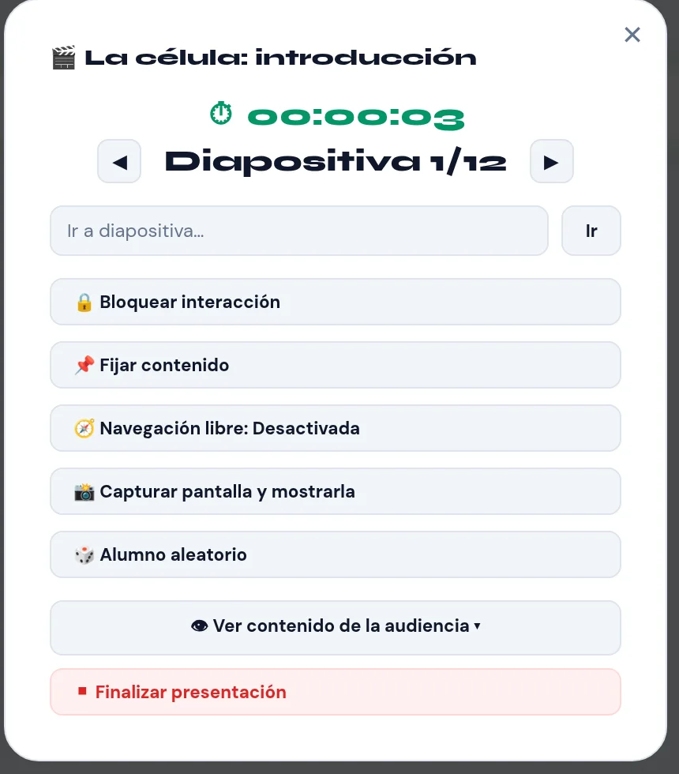
Control en vivo.
📦 Clases
Clases completas armadas como una secuencia de pasos.
Pasos de asistencia, presentación, aviso, actividad del banco y temporizador.
Minutos sugeridos por paso: el sistema sugiere avanzar, pero tú decides.
Se inician y controlan desde la computadora o el celular.
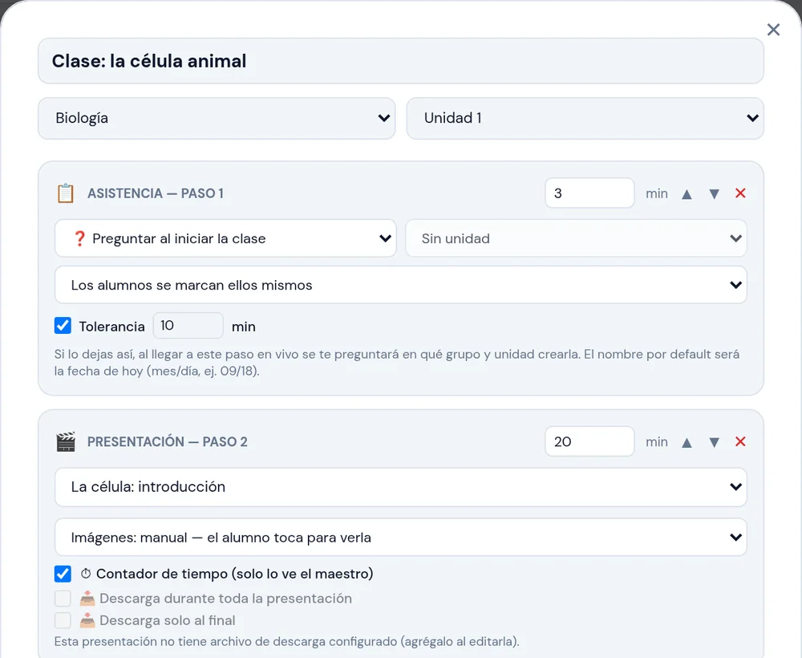
Pasos de una clase.
👤 Cuentas
Las cuentas de tus alumnos.
Crear alumnos con apellidos y nombres, e inscribirlos en tus clases.
Filtrar por clase y mover alumnos de una clase a otra.
Activar o desactivar cuentas, restablecer contraseñas y desbloquear a quien falló varias veces su contraseña.
La dirección crea las cuentas de maestro; cada maestro solo ve a sus alumnos.
⚙️ Configuración
Ajustes de la plataforma. Si la escuela tiene dirección, los respaldos, las actualizaciones, la seguridad y el modo invitado los administra ella desde su panel; el maestro conserva el idioma y sus reportes de problemas.
Idioma de tu panel: español o inglés.
Actualizaciones: buscar, descargar e instalar versiones nuevas.
Respaldo automático a la carpeta o memoria USB que elijas, cada cuántas horas y con lo que decidas incluir.
Restaurar un respaldo eligiéndolo con Explorar, combinándolo con tus datos o reemplazándolos.
Seguridad: bloqueo por intentos fallidos de contraseña.
Modo invitado y registro de problemas para soporte.
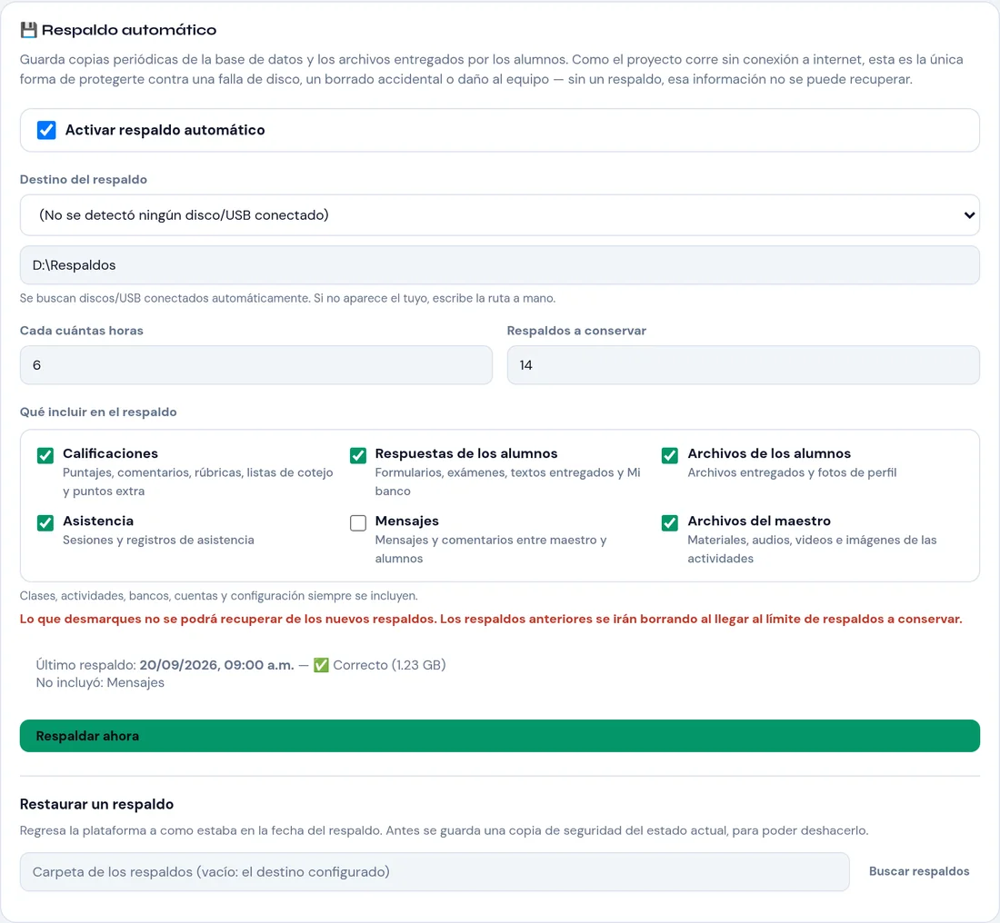
Respaldos.
⚡ Funciones rápidas
Un menú en la barra superior con las herramientas que usas durante la clase, sin cambiar de pestaña.
🎲 Alumno aleatorio y 👥 equipos.
⏱ Temporizador en pantalla completa, que también ven los alumnos.
🎤 Semáforo de ruido, 🔗 cadena de participación y 💀 supervivencia.
📢 Aviso en vivo y 📲 código QR en pantalla completa para que los alumnos entren.
Ciclos escolares: crea uno nuevo, copia tus grupos y cambia de ciclo; cada maestro tiene los suyos.
Centro de mensajes con el historial de cada alumno.
Notificaciones: eliges cuáles de los nueve tipos de aviso quieres recibir, como entregas tardías o exámenes terminados.
Mi cuenta: foto, contraseña, tu horario semanal y el orden de la barra del celular.
02 / Panel del maestro en el celularPara usar caminando por el salón
Abre la misma dirección en tu celular y entra con tu cuenta de maestro. La barra inferior reúne las herramientas para dar la clase; tú eliges cuáles aparecen y en qué orden desde Mi cuenta. Crear y editar contenido se hace en la computadora.
🎲
Alumno aleatorio
Ruleta con tus alumnos, solo los presentes si lo prefieres.
👥
Equipos
Al azar, de un tamaño elegido o a mano, con temas por equipo.
📋
Lista
Pase de lista y registro por QR con la cámara.
⏱
Tiempo
Temporizador que ven tú y tus alumnos.
🔊
Ruido
Semáforo que mide el ruido con el micrófono.
🔗
Cadena
Participación en la que los alumnos se pasan el turno.
💀
Supervivencia
Preguntas para todo el grupo en las que nadie quiere quedar eliminado.
📢
Aviso
Mensaje, encuesta, verdadero o falso u opción múltiple.
📷
Cámara
Transmite en vivo lo que enfoca tu celular.
🎬
Presentar
Inicia y controla presentaciones.
📦
Clases
Inicia y avanza una clase armada.
📝
Examen
Supervisa un examen, configúralo y califica hojas de burbujas con la cámara.
🎮
Juegos
Inicia y controla los juegos.
📑
Asignaciones
Califica entregas con rúbrica, lista de cotejo o calificación rápida.
💬
Mensajes
Conversaciones con tus alumnos.
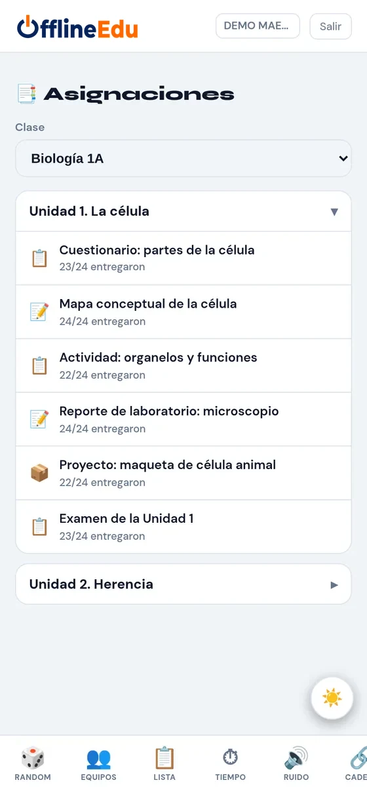
Asignaciones.
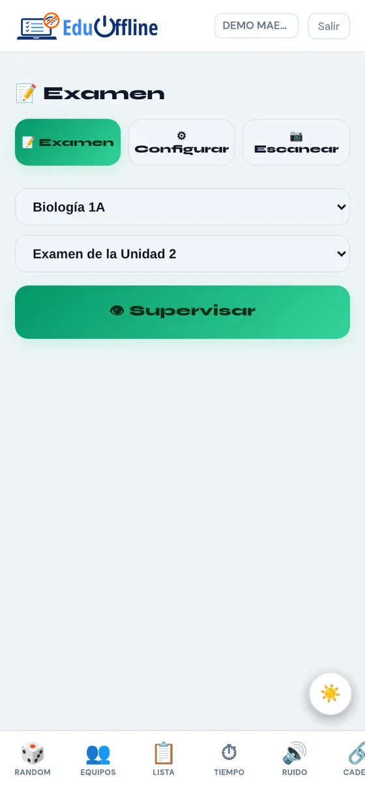
Examen.
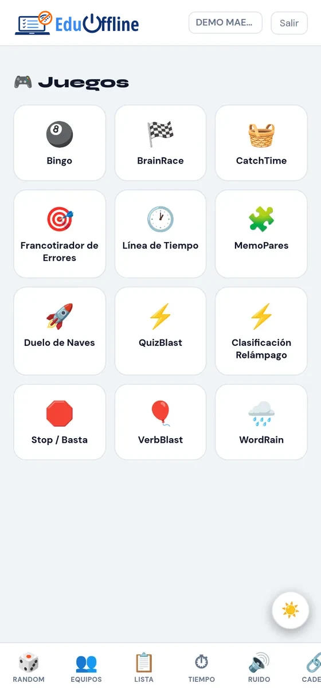
Juegos.
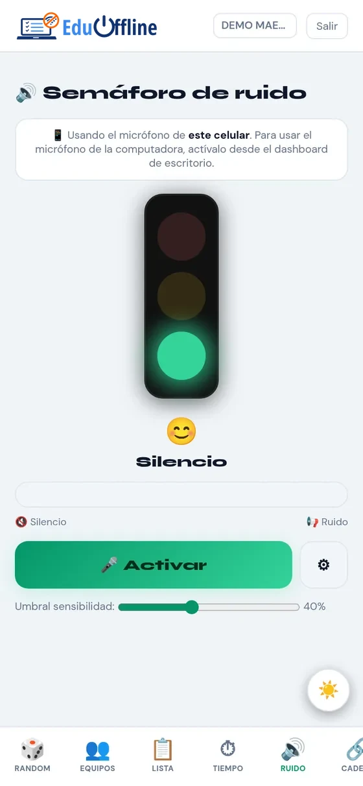
Ruido.
03 / Tipos de asignaciones11 tipos
Tipo
Para qué sirve
Calificación
📋 Formulario
Preguntas de varios tipos con calificación automática, secciones, multimedia y explicaciones.
Automática
📚 Formulario desde banco
Cada alumno recibe una selección aleatoria de preguntas de tus bancos.
Automática
📝 Tarea
El alumno entrega texto o archivos.
Manual
🎯 Audio o video interactivo
Preguntas en momentos del audio o video, con subtítulos opcionales.
Automática
📄 Material
Archivos o enlaces para consultar.
No se califica
📖 Banco de estudio
Preguntas para repasar, descargables en PDF.
No se califica
📝 Examen
Con tiempo, supervisión, código de acceso, versiones y opción en papel.
Automática
📦 Proyecto
Entrega calificada con rúbrica o lista de cotejo.
Manual con rúbrica
🔎 Sopa de letras
Se arma con un diccionario de términos.
Automática
🔤 Crucigrama
Se arma con términos y definiciones.
Automática
🧊 Modelo 3D
Modelo tridimensional para explorar, como una célula.
No se califica
Modelo 3D de muestra
Así ve el alumno un modelo 3D: lo gira arrastrando y lo acerca con la rueda del ratón o con dos dedos. Esta célula animal viene de ejemplo, junto con un formulario de 16 reactivos para importar.
El modelo 3D se carga al llegar aquí.
Elige una parte para resaltarla.
04 / Tipos de reactivosFormularios, exámenes y bancos
En formularios, exámenes y videos interactivos
✏️Texto corto
Respuesta de una línea.
📝Párrafo
Respuesta larga, calificada por el maestro.
🔘Opción múltiple
Una sola respuesta correcta.
☑️Casillas
Varias respuestas, con crédito parcial.
⚖️Verdadero / Falso
Dos opciones.
🔢Ordenar
Poner elementos en orden.
🔗Unir columnas
Relacionar pares, con crédito parcial.
Además, en los bancos
📖Descripción
Texto o lectura de apoyo; no es pregunta.
📂Sección
Agrupa preguntas sobre una misma situación.
🔤Definición
Término y definición para crucigramas, sopas de letras y repasos.
Puntos por reactivo, reactivo obligatorio y opciones en orden aleatorio.
Imagen en la pregunta y explicación que el alumno ve si se equivoca.
Crédito parcial en casillas y unir columnas.
Secciones con texto, audio, video o modelo 3D.
05 / Tipos de bancosPrepara una vez, reutiliza siempre
❓Reactivos
Preguntas listas para insertar en formularios, exámenes y juegos.
📖Diccionarios
Términos y definiciones para crucigramas, sopas de letras, EduQuiz y el glosario del alumno.
📁Materiales
Archivos y enlaces para reutilizar en tus actividades y presentaciones.
🧩Actividades
Actividades completas que puedes usar en cualquier grupo o en una clase armada.
📝Exámenes
Exámenes completos para aplicar de nuevo.
Todos se organizan por materia y unidad, con carpetas anidadas, buscador y selección de varios elementos para copiarlos, moverlos o eliminarlos.
06 / Conversaciones con vozCon tu cuenta de ElevenLabs
Convierte un guion escrito en una conversación con voces distintas para cada personaje, y descárgala en MP3 para usarla en formularios, audios interactivos o presentaciones. Se abre desde Funciones rápidas → Conversaciones con voz.
Conectar tu cuenta de ElevenLabs
Entra a elevenlabs.io con tu cuenta.
Ve a Developers → API Keys y crea una clave. Puedes limitarla a los permisos de Text to Speech y Voices.
Copia la clave, pégala en EduOffline y pulsa Conectar.
La clave se guarda solo en tu servidor de EduOffline, nunca se muestra completa ni se envía a los alumnos. Cada maestro conecta su propia cuenta, y el uso consume los créditos de tu plan de ElevenLabs. Necesita internet.
Crear la conversación
Escribe el guion, un renglón por intervención: David: Hi Maria, how was your weekend?
EduOffline detecta los participantes y les asigna voces según su nombre; puedes cambiarlas.
Escucha la vista previa y descarga el MP3.
Si vuelves a generar un audio que ya existe, se reutiliza sin gastar créditos de nuevo.
07 / Reportes descargablesPDF y Excel
Reporte de la unidad (PDF): calificación de cada alumno por criterio.
Reporte final (PDF): todas las unidades y la calificación final.
Hoja de cálculo (Excel) con fórmulas, por unidad o completa.
Rúbricas y listas de cotejo calificadas o en blanco (PDF).
Examen en papel: versiones, hoja de burbujas y clave (PDF).
Formularios, banco de estudio y definiciones en PDF.
Logo de tu escuela por clase en los PDF.
08 / Lo que ve el alumnoDesde cualquier navegador
Mis clases: actividades de cada unidad, pendientes y entregadas.
Evaluación: calificación por unidad y por criterio, con los detalles de rúbricas y listas de cotejo.
Asistencia: su registro de cada sesión.
Juegos abiertos por su maestro y Mi banco para repasar y descargar en PDF.
Mensajes con su maestro, glosario de la unidad y graficadora si su maestro la habilita.
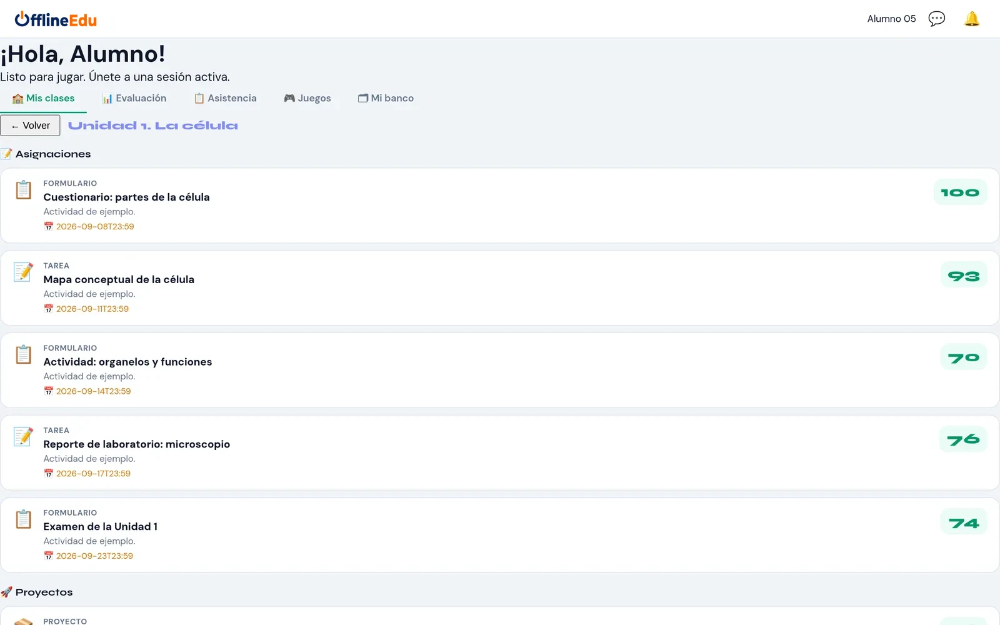
Sus actividades y calificaciones.
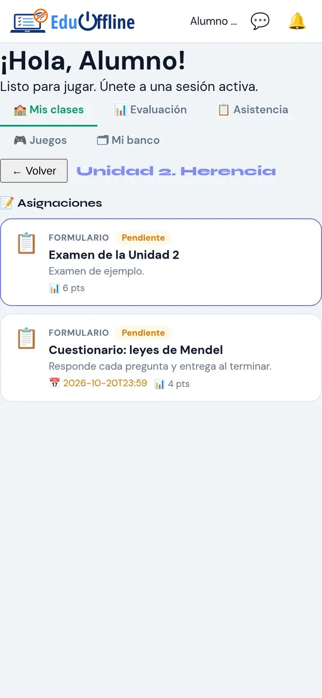
En su celular.
09 / Panel de la direcciónPara el director de la escuela
El director entra con su propia cuenta, distinta a la de cualquier maestro, y llega a un panel aparte para administrar la escuela. Supervisa sin intervenir en el trabajo de cada maestro: no ve respuestas, entregas, mensajes ni notas privadas, y todo lo que hace queda registrado. La cuenta de la dirección se crea al instalar EduOffline.
Inicio: alumnos, docentes, grupos, conexiones activas, espacio usado, estado del servidor y de la base de datos, último respaldo y actividad reciente.
Docentes: crear cuentas, desactivarlas (se cierra su sesión al momento y sus datos se conservan), restablecer contraseñas y desbloquear. Al hacer clic en un docente ves sus grupos, materias y horario semanal.
Alumnos: todos los de la escuela, con búsqueda, filtros por grupo y estado (activos, desactivados, bloqueados, nunca han entrado) y orden alfabético, por grupo o por último acceso.
Grupos: todos los grupos con su docente. Transfiere un grupo a otro docente con sus alumnos, unidades, asignaciones, entregas, calificaciones y asistencia; los dos docentes reciben un aviso.
Calificaciones en solo lectura de cualquier grupo. Cada consulta queda registrada y el maestro sabe que la dirección puede verlas.
Configuración de la escuela: respaldos y restauración, actualizaciones, seguridad de inicio de sesión, modo invitado y el envío de estadísticas y reportes.
Auditoría: inicios de sesión de docentes y de la dirección, intentos fallidos, cambios de cuentas, transferencias, consultas de calificaciones y cambios de configuración.